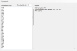

Kalkulator wygranych amino lotto 2009 oraz 2010
Do końca roku Amino przygotowało ciekawą loterię - mozna wygrać wielokrotność 1000 złotych, ale nie więcej niż 10000 zł zbierając opakowania na przyprawy z zupek, na których jest jedna lub dwie kwoty, które należy sumować. Do tej żmudnej operacji przygotowałem narzędzie, które jest zdecydowanie łatwiejsze w użyciu niż kalkulator na stronie producenta.

Wiadomo, że szanse wygranej są na tyle duże, na ile drukowane liczby są spreparowane przez producenta tak, aby sumy dawały okrągłe liczby tylko dla pewnej części opakowań, a z tego co zdążyłem zauważyć pula liczb jest dość ograniczona dając bardzo przewidywalne ilości wygranych. Z mojej puli liczb, nawet powtórzonej kilkukrotnie, nie udało się uzyskać żadnej wygranej. Pomimo tego spróbować można, w końcu zupki Amino nie są takie złe :)
{kind=link}
Kalkulator korzysta ze słownika liczb umieszczonego w folderze z programem, o nazwie "amino.txt", który wczytuje przy otwieraniu programu i zapisuje przy zamykaniu, aby ułatwić zarządzanie swoją indywidualną pulą liczb. Liczby wprowadza się w nowych liniach lub przez oddzielenie spacjami, a słowa które nie są liczbami są pomijane. Parametry wyliczania można zmienić, jeśli kiedyś powstanie inna podobna loteria. Przycisk wylicz powoduje wyszukanie wygranych, znajdywane są wszystkie kombinacje liczb (również wielokrotne wystąpienia tych samych) i wiadomo - lepiej wybrać najwyższą lub zebrać więcej opakowań i poczekać na jeszcze wyższą.
Dołączam też źródła programu z licencją "róbta co chceta" w zamian za podziękowanie w komentarzu.
Aktualizacja
Ponieważ program nie działał wystarczająco szybko przy dużej ilości wprowadzonych liczb, przerobiłem go tak aby używał HashSet i wyznaczał wartość hash dla szukanych sum:
int hash = (nums.IndexOf(item) + 1) * num.Value;
int sumHash = hash1 ^ hash2;
Aktualizacja
Na stronie http://www.e-konkursy.info/forum/post-870037-cat-1-pg-20.html jest umieszczony wątek na temat konkursu. Z kwot uzbieranych przez forumowiczów jasno wynika, że gdy liczba znaleziona w opakowaniu jest podzielna przez 11 wygranej nie będzie, gdyż suma dowolnych liczb podzielnych przez 11 nie da wielokrotności liczby 1000 mniejszej niż 11000. Tak czy inaczej kalkulator pomoże znaleźć kombinację liczb dającą najwyższą wygraną, jeśli łut szczęścia dopisze i trafimy na liczbę niepodzielną przez 11. Powodzenia !
Aktualizacja 24.09.2009 (wersja 2.0)
Przygotowałem kolejną wersję programu, która w porównaniu z poprzednią nie pokazuje powtarzających się wygranych, liczy dużo pewniej niż poprzednia i zdecydowanie szybciej. Uaktualniony jest też kod źródłowy programu do pobrania (amino_source.zip). Wszystkich zgłoszonych błędów już nie ma, ale oczywiście do uruchomienia programu potrzebny jest .Net framework 3.5 SP1 - (http://www.microsoft.com/downloads/details.aspx?FamilyID=AB99342F-5D1A-413D-8319-81DA479AB0D7&displaylang=pl)
Aktualizacja 15.10.2009 (wersja 2.5)
W związku z licznymi prośbami o szybsze działanie programu dziś powstała nowa wersja, która przed wyszukaniem kombinacji liczb szuka liczb podzielnych przez 11 i jeśli wszystkie liczby są podzielne przez 11, informuje, że nie znaleziono wygranej. Oczywiście liczbę 11 można zmienić lub nie wpisać jej wcale. W prawdzie jest to tylko ominięcie problemu, ale dla loterii jest całkiem skuteczne - jeśli masz dużo liczb i program się zawiesi przy liczeniu to prawdopodobnie masz wygraną :)
Przyspieszenie liczenia kombinacji jest możliwe, ale wymaga stosowania bardziej złożonych technik liczenia kombinacji, a "brutalne" liczenie (prawie) wszystkich kombinacji użyte w programie jest bardzo czasochłonne stąd mała jego wydajność - ilość obliczeń dla każdej kolejnej ilości wygranych liczb wyznaczana jest według wzoru: http://pl.wikipedia.org/wiki/Kombinacja_bez_powtórzeń
Aktualizacja 22.11.2009
Do sprawdzania podzielności kwot przez 11 i szukania potencjalnych wygranych przygotowałem kalkulator online, który we wprowadzonym tekście wyszukuje kwoty trzy i czterocyfrowe, które mogą dać wygraną. Zbieżność dnia i miesiąca dzisiejszej daty z podzielnością w loterii amino jest czysto przypadkowa :)
Aktualizacja 29.12.2009
Ponieważ loteria dobiega końca, udostępniłem do pobrania kalkulator onima.exe, który 2-3 miesiące temu był wystawiony na allegro, a w międzyczasie został dopracowany. Kalkulator jest szybki i bezbłędny, polecam.
Aktualizacja 18.07.2010
Witam wszystkich! Nie miałem możliwości śledzenia losów nowej loterii, więc aktualizuję stronę dopiero teraz. Tym razem loterię sponsoruje liczba 13, więc zrobiłem kilka zmian - szukanie liczb podzielnych przez 13 działa od dzisiaj na stronie w forumlarzu poniżej, można szybko sprawdzić czy mamy wygrywającą liczbę. W pobieralni wrzuciłem onima2010.exe, który liczy zgodnie z zasadami nowej loterii i znajduje kombinacje liczb dające wygraną. Niestety nie gwarantuję, że program działa poprawnie, gdyż piszę z wysp i nie widziałem loterii na oczy, sugeruję się tylko tym co piszecie poniżej. Powodzenia!
Aktualizacja 20.07.2010
Jeszcze o licencji: kalkulator onima (2009 i 2010) jest i będzie darmowy, możecie go używać bez ograniczeń, jednak nie można go sprzedawać, modyfikować czy podszywać się pod autora. Jeśli ktoś z Was znajdzie onima2010 w sprzedaży na Allegro, Ebay lub innym serwisie aukcyjno-ogłoszeniowym, dajcie znać w komentarzach, a najlepiej od razu zgłoście do obsługi tego serwisu jako naruszenie regulaminu. Dzięki, pozdrawiam.
Wyszukiwarka liczb wygrywających
Wprowadź do pola poniżej liczby, oddzielone dowolnymi znakami i naciśnij Szukaj.
Wklej tekst do pola powyżej i naciśnij przycisk "Wylicz" ...
| Attachment | Size |
|---|---|
| 20 KB | |
| 20 KB |